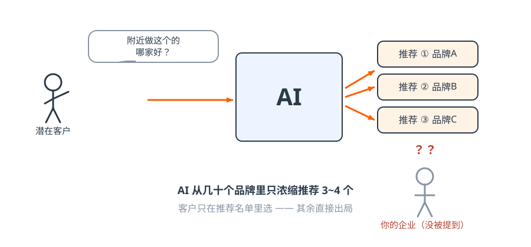
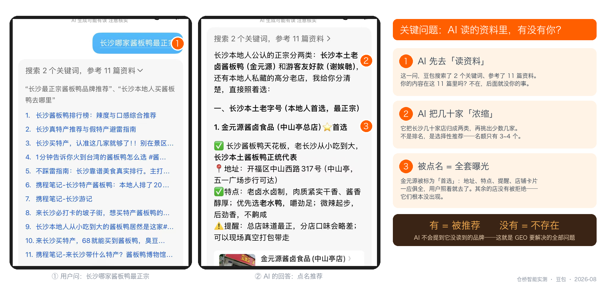
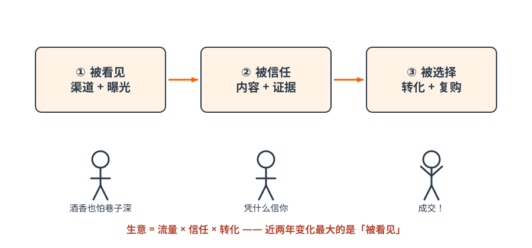
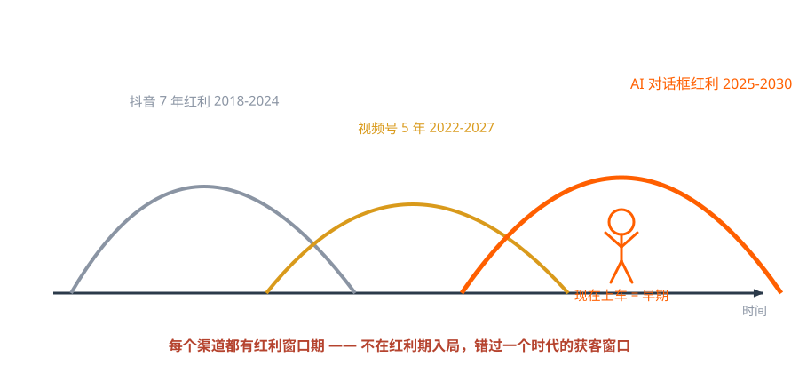
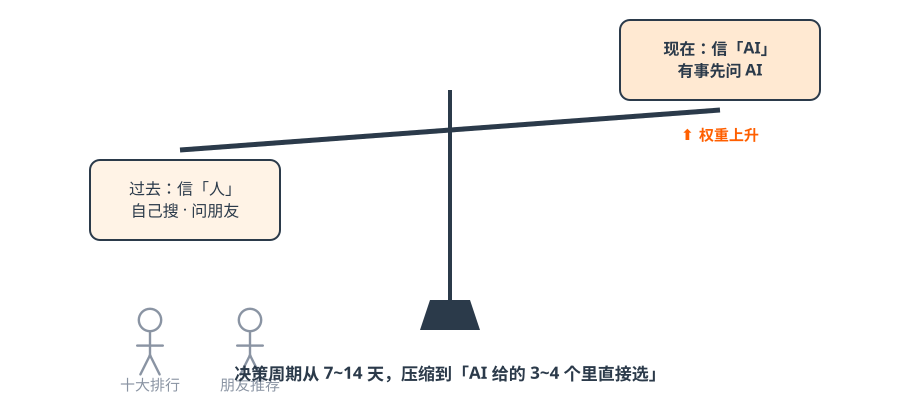
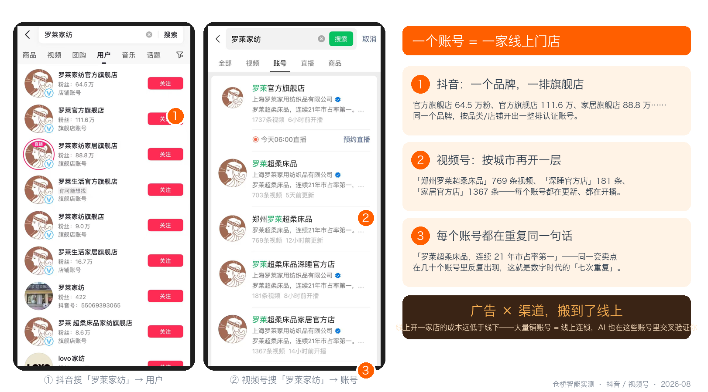

第一篇 认知｜你的客户去哪了¶
一句话总结：客户有需求先问 AI 了，AI 只推荐 3~4 家——没上牌桌的企业，正在无声地失去入场资格。
1.1 从一只酱板鸭说起¶
游客到长沙想吃地道酱板鸭。他先自己搜——怀疑排行榜有水分；再问朋友——怕不地道、怕踩雷、怕被推荐吃回扣；最后他打开豆包问了一句「长沙哪家酱板鸭最正宗」。AI 从几十个品牌里浓缩推荐了 3~4 个，他就在这 3~4 个里选了一家。
其余几十家发生了什么？什么都没发生——这正是最可怕的地方。 它们没有被拒绝，它们是压根没有出现。

图解｜AI 只推荐 3~4 家，其余直接出局
实测截图｜我们自己在豆包问「长沙哪家酱板鸭最正宗」：AI 先读了 11 篇资料，把几十家店浓缩成两类，再点名推荐「金元源」并附上地址、特点和店铺卡片——被点名的获得全套曝光，没被读到的品牌根本不会出现（仓桥智能实测，2026-08）老板划重点
传统获客的失败是「客户看了没选你」，AI 时代的失败是「客户根本不知道你存在」。前者你还有机会改进话术，后者你连输在哪里都不知道。
1.2 用户习惯三次迁移：搜 → 刷 → 问¶
| 时代 | 用户动作 | 营销方式 | 典型平台 |
|---|---|---|---|
| PC 互联网 | 搜 | 关键词竞价（SEO/SEM） | 百度 |
| 移动互联网 | 刷 | 算法推荐、爆款内容 | 抖音、小红书 |
| AI 智能时代 | 问 | 被 AI 选择性推荐（GEO） | 豆包、元宝、DeepSeek |
用户的习惯决定营销方式。「搜」的时代拼排名，「刷」的时代拼爆款，「问」的时代拼的是——AI 信不信你、理不理解你。
1.3 生意的本质没变：三个环节，缺一不可¶

图解｜被看见 → 被信任 → 被选择：任何时代的生意都是这三步| 环节 | 含义 | 传统动作 | 现在的动作 |
|---|---|---|---|
| ① 被看见 | 先让潜在客户知道你 | 地段、展会、地推、电销、投流 | 进入 AI 的推荐名单 |
| ② 被信任 | 客户凭什么信你 | 品牌广告、口碑、资质 | AI 能验证的证据链 |
| ③ 被选择 | 差异化打动客户 | 销售话术、促销 | AI 转述你的差异点 |
成功公式：生意 = 流量 × 信任 × 转化。近两年变化最大的是「被看见」——展会冷清、电销被拒、投流变贵，不是你做得差了，是客户的注意力搬家了。
课堂上还有另一组表述值得记住——生意的三个杠杆：资本杠杆（撬动稀缺资源）× 人力杠杆（放大时间价值）× 影响力杠杆（被看见产生信任）。AI 时代最大的变化是人力杠杆被重构：一个普通员工配一个 AI 员工，就能拥有过去一个专业团队的产能——这是中小企业第一次和大公司站上同一条起跑线的机会。
黄金五法则¶
- 在哪里被看见，就在哪里建渠道——渠道是入口，不是装饰；
- 在哪里建渠道，就在哪里打广告——广告跟着渠道走，不逆向；
- 在哪里打广告，就在哪里做销售——转化路径必须最短；
- 客户把时间花在哪里，我们就必须出现在哪里；
- 每个渠道都有「红利窗口期」，错过等于错过时代。

图解｜渠道红利迁徙：抖音 7 年（2018-2024）→ 视频号 5 年（2022-2027）→ AI 对话框（2025-2030，正在早期）1.4 数据看清趋势：AI 已是全民级入口¶
- 截至 2025 年 12 月，中国 AI 用户规模 6.02 亿，约占网民 53%——用户基础不是「早期尝鲜者」，是「全民」；
- 较 2024 年底增长 +147%，约每 7 个月翻一倍；
- 搜索引擎用 18 年达到的渗透率，AI 只用了 2 年。2026—27 年，AI 将成为像水电一样的基础设施；
- 平台周期规律（课堂观点）：每一轮春晚都是平台抢夺用户习惯的入口——2015 微信摇一摇催生微商红利，2021 抖音独家互动把用户推到 10 亿+，2026 年春晚由豆包拿下，C 端用户半年暴涨至 3.45 亿，成为字节的第二增长曲线。
现场实测（现在就做，2 分钟）
打开豆包或元宝，输入：「[你的城市][你的品类]哪家好」。
看三件事：① 答案里有你吗？② 推荐了谁？③ 它引用了什么来源？
——这一问的结果，比本教程任何一句话都有说服力。
1.5 最本质的变化：信任结构从「人」迁移到「AI」¶

图解｜信任的天平正在倾斜：从「信自己搜的、信朋友说的」到「信 AI 答的」| 过去：信任「人」 | 现在：信任「AI」 |
|---|---|
| 相信自己搜出来的「十大排行」 | 越来越相信 AI 给出的答案 |
| 相信商家「精心撰写」的自我介绍 | 有事先问 AI：攻略/推荐/对比/决策 |
| 比价、比口碑、反复权衡，决策周期 7~14 天 | 决策被压缩：在 AI 给的 3~4 个选项里直接选 |
GEO 的定义由此而来：在用户询问 AI 的时刻，成为 AI 愿意推荐的那一家。 AI 推荐位 = 新时代的黄金广告位，一次只给 3~4 个名额；信任分越高 → 推荐权重越大 → 持续受益。
1.6 国内 AI 平台格局：用户在哪里，阵地就在哪里¶
月活（2026 年公开口径）：豆包 3.45 亿 > 通义千问 1.66 亿 > DeepSeek 1.27 亿 > 元宝 0.57 亿 > Kimi 0.08 亿 > 文心一言 0.05 亿。
两大必争生态与一个陷阱
- 字节系（豆包）：当前用户量第一，必争。课堂判断：「抖音让你被 AI 看见，豆包把你推荐给用户」——豆包完成问答后会推一条抖音视频完成引流，并通过抖音/抖店闭环；
- 腾讯系：微信内置 AI Agent「小V」灰度内测中，公测后直达微信 14 亿日活——「上一个 7 年流量霸主是抖音，AI 时代流量霸主是微信」，现在布局微信生态相当于 5 年前开抖音号；
- 小红书陷阱：不被各大 AI 稳定抓取——适合获客种草，不适合当 GEO 信源。资源有限时，聚焦 1~2 个核心生态打透再扩展。
1.7 从脑白金到 AI 时代：生意的逻辑没变¶
脑白金为什么火？一是广告重复（七次原则：用户至少看到七次才产生记忆与购买），二是线下渠道铺满——「一万次重复的广告 × 全国大小商超渠道」，广告+渠道，缺一不可。
- 第 1—3 次触达：无感 → 眼熟；第 4—6 次：好像在哪见过；第 7 次以上：知名品牌，可以选；
- 迁移到今天：AI 对话框 = 新广告位，内容矩阵 = 新渠道——GEO + 矩阵，就是当代的「广告 + 渠道」；矩阵高频曝光 = 数字时代的「七次重复」。

实测截图｜在抖音和视频号搜「罗莱家纺」：一个品牌开出一整排认证账号，按品类、城市分层，每个账号都在重复同一套卖点——「一个账号就是一家线上门店」，大量铺账号相当于在线上开连锁店，成本远低于线下（仓桥智能实测，2026-08）✅ 行动检查¶
- [ ] 用自己的品牌做了 1.4 节的 2 分钟实测，记下了 AI 推荐了谁；
- [ ] 判断了自己的主生态：字节系 / 腾讯系 / 通用 AI，先打哪个；
- [ ] 给团队转述了一句话：「客户的选项被 AI 收窄了，我们要上牌桌。」